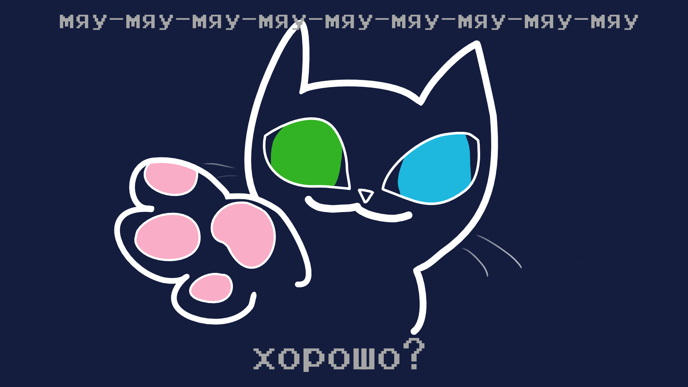
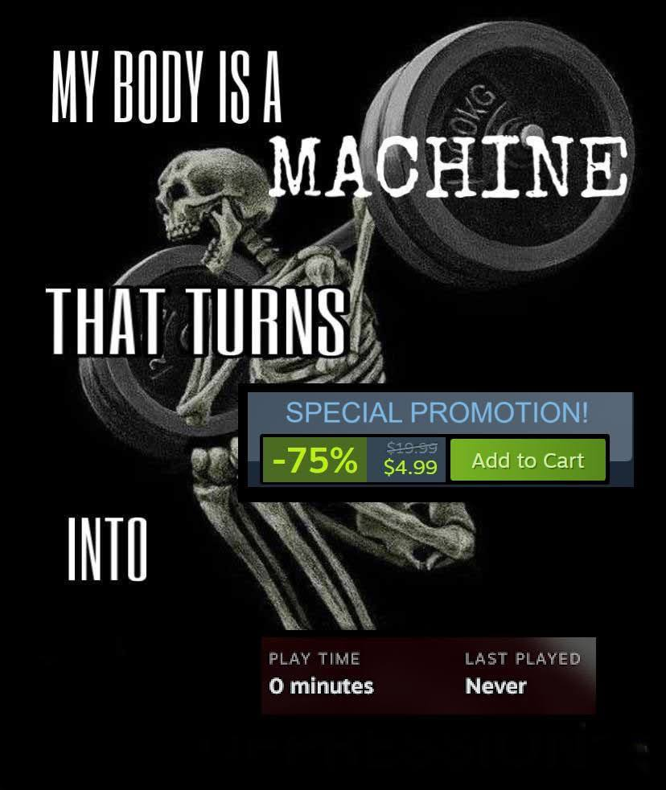

📰 Новости
Больше обновлений! Версия 0.3
29.07.2025
Ещё одно обновление сайта.
Среди изменений: ...развернуть
📷 Всякие картинки


Обзор на Psychopomp
Вам всю вашу жизнь врали...
И нет, я сейчас говорю не только о реальном, нашем с
вами
мире, а цитирую главную героиню игры psychopomp - молодую девушку с напрочь поехавшей крышей,
которой ещё и кто-то дал молоток, благо именно за неё мы и играем, а это значить, что мы
будем...
Само собой миленько и пацифично играть, мы же не психопаты, ДА?!
Игра является хоррором, только вот пугает в ней вовсе не внезапно влазящие скримеры, а атмосфера, история и наглухо потерявшая связь с реальностью героиня, путь которой мы и увидим. Даже меня, далеко не главного любителя хорроров игра не просто зацепила, а деже запала в сердечко, ну если это всё вас так и не заинтересовало, то замечу, что игра имеет, по моему мнения просто отличный саундтрек, ну и что важно для большинства - имеет бесплатную версию, хотя я всё же и советую играть в Gold-версию
Обзор на Buckshot Roulette
Итак, наверняка вы когда-нибудь хотели застрелить колобка. Что, нет? Странные вы конечно, но
именно это можно сделать в игре от Эстонского инди-разработчика Майка Клубники под названием
Buckshot Roulette. Ну, вернее будет сказать, не просто застрелить, а сыграть с ним в русскую
рулетку дробовиком 12-го калибра, а что бы разнообразить этот процесс, вы получите предметы,
способные изменить ход противостояния. Получится ли вам выжить выиграть?
Рекомендую попробовать самим и узнать.
Игра получилась весьма добротной залипалкой на пару часов. Особенно хочется отметить атмосферу, визуал и музыку. Всё вышеперечисленное выполнено просто на высшем уровне. Настоятельно рекоммендую самим заценить.
Все новости
ЗАПОЛНИТЬ!
Минорное обновление, несущие в основном технические измения
Среди них:
29.07.2025
Ещё одно обновление сайта.
Среди изменений:
23.07.2025
Только позавчера я рассказал о своём сайте, а уже сегодня на него прилетело первое обновление.
Среди изменений:
22.07.2025
Да, теперь у очередного ноунейма из интернета есть свой собственный сайт!
А вообще он пока
очень
сырой и требует огромных доработок, но я стараюсь.
Все любимые треки
29.07.2025
Ещё одно обновление сайта.
Среди изменений: ...развернуть